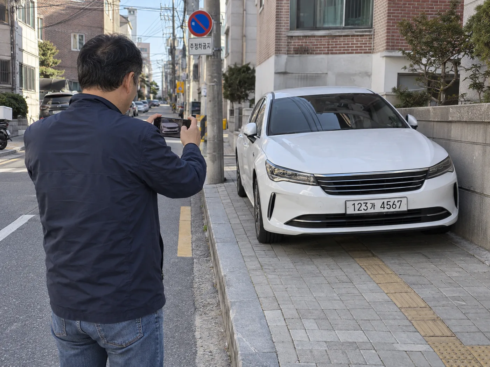
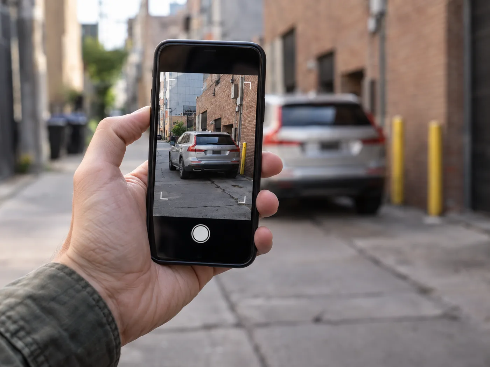

▲ 안전신문고 앱은 위반 차량과 번호판이 함께 나오는 사진 2장이면 신고를 접수한다 ⓒ CarPrism (AI 생성 이미지)
골목 소화전 앞에 세워진 차, 횡단보도를 반쯤 가린 차. 예전 같으면 눈살만 찌푸리고 지나쳤지만, 지금은 스마트폰만 있으면 그 자리에서 신고까지 끝낼 수 있다.
과거 '스마트국민제보'라는 이름으로 불리던 앱은 현재 '안전신문고'로 통합·운영되고 있다. 불법주정차뿐 아니라 안전 위험 신고를 함께 받는 앱이지만, 실제 이용 빈도가 가장 높은 신고 유형 중 하나가 바로 불법주정차다.
1. '스마트국민제보'는 옛 이름 — 지금은 '안전신문고'
스마트폰으로 불법주정차를 신고하는 서비스는 이름이 여러 번 바뀌었다. 초기에는 '생활불편신고', 이후 '스마트국민제보' 등으로 불렸지만, 현재는 행정안전부가 운영하는 '안전신문고' 앱과 웹사이트로 통합돼 있다.
📍 이름은 바뀌었지만 기능은 남아있다
앱 스토어에는 "안전신문고(구 스마트국민제보, 생활불편신고)"라는 표기로 등록돼 있어, 과거 이름으로 검색해도 같은 앱을 찾을 수 있다. 안전신문고는 불법주정차 외에도 도로 파손, 시설물 위험, 안전 무시설 등 다양한 생활 안전 신고를 함께 받는다.
안전신문고 앱과 신고 방법은 공식 홈페이지에서 확인할 수 있다. 안전신문고 홈페이지 바로가기
2. 신고 방법 — 사진 2장, 1분 간격이 핵심
불법주정차 신고는 아무 사진이나 올린다고 접수되지 않는다. 안전신문고는 조작을 막기 위해 까다로운 촬영 조건을 두고 있다.
✅ 신고 사진 촬영 요건
· 반드시 안전신문고 앱 내부의 카메라 기능으로 촬영 — 갤러리에 저장된 사진, 블랙박스 영상은 인정되지 않음
· 같은 위치·같은 각도에서 촬영한 사진을 1분 이상 간격을 두고 2장 이상 확보
· 사진에 위반 차량 번호판, 위반 상황, 주변 배경이 모두 선명하게 나와야 함
· 촬영 간격·인정 기준은 위반 유형과 지자체 방침에 따라 달라질 수 있어, 앱 내 최신 안내 문구를 먼저 확인할 것

▲ 신고 사진은 반드시 앱 내장 카메라로, 1분 이상 간격을 두고 2장 이상 찍어야 한다 ⓒ CarPrism (AI 생성 이미지)
📍 왜 1분 간격을 두나
단순히 '주차된 차'가 아니라 일정 시간 이상 계속 정차·주차 상태였다는 사실을 증명하기 위해서다. 잠깐 정차한 차량까지 신고 대상이 되지 않도록, 시간 간격을 둔 2장의 사진으로 지속성을 입증하도록 설계돼 있다.
3. 어디를 신고할 수 있나 — 계도 없이 즉시 과태료가 붙는 곳
모든 불법주정차가 똑같이 처리되는 것은 아니다. 일부 구역은 안전과 직결된다는 이유로 계도 기간 없이 곧바로 과태료가 부과된다.
| 구역 | 기준 |
|---|---|
| 소화전 주변 | 소화전으로부터 5m 이내 |
| 교차로 모퉁이 | 도로 모퉁이(꼭짓점 또는 곡선 종료 지점)로부터 5m 이내 |
| 횡단보도 | 횡단보도 위 및 그 진입 구간 |
| 버스정류소 | 정류소 표지로부터 10m 이내 |
| 어린이보호구역 | 초등학교 주 출입문 앞 등 지정 구간, 통상 08:00~20:00 적용 |

▲ 소화전 5m 이내는 대표적인 절대적 주정차 금지구역으로, 계도 없이 바로 과태료가 붙는다 ⓒ Wikimedia Commons
📍 소화전 앞은 과태료도 더 높다
일반 주정차 위반은 승용차 기준 4만 원 수준이지만, 소화전 주변 5m 이내처럼 화재 진압을 방해할 수 있는 구역은 승용차 8만 원, 승합차 9만 원 수준으로 더 높은 과태료가 매겨진다. 어린이보호구역은 이보다도 높은 승용차 12만 원, 승합차 13만 원 수준이다.

▲ 교차로 모퉁이는 시야를 가려 사고 위험이 커, 신고 대상이 되는 대표 구역이다 ⓒ Wikimedia Commons
불법 주정차 신고법과 구역별 과태료 기준은 정책브리핑 카드뉴스에서 한눈에 확인할 수 있다. 6대 불법 주정차 신고법 바로가기
4. 신고하면 포상금을 받을 수 있나
과거에는 신고 건수만큼 현금 포상금을 지급하는 지자체가 있었다. 이른바 '카파라치'라는 말이 나올 정도로 전문적으로 신고를 다니는 사람들이 생기기도 했다.
✅ 지금의 포상 방식
· 건별 현금 포상금은 예산 부담과 부작용 문제로 대부분의 지자체에서 폐지됐음
· 대신 행정안전부·지자체가 분기별·연간 우수 공익 신고자를 선정해 표창, 온누리상품권, 모바일 기프티콘 등을 지급하는 방식으로 운영
· 포상 여부와 규모는 지자체별로 다르므로, 거주 지역 시·군·구청 공지사항을 확인하는 것이 정확함
📍 '용돈벌이' 목적이라면 기대는 낮추는 게 좋다
건당 현금을 기대하고 신고하는 시대는 지났다. 지금의 안전신문고 신고는 금전적 보상보다 생활 안전을 지키는 공익 활동에 가깝다. 다만 신고가 누적되면 지자체 차원의 연말 포상 대상자 선정에는 반영될 수 있다.
5. 신고자 정보는 보호되나, 허위신고는 어떻게 되나
"신고했다가 보복당하지 않을까"라는 걱정이 신고를 망설이게 하는 가장 큰 이유 중 하나다.
| 구분 | 내용 |
|---|---|
| 신고자 정보 공개 | 원칙적으로 비공개 — 피신고자에게 신고자 인적사항이 전달되지 않음 |
| 정보 무단 공개 시 | 공익신고자 보호 관련 법령상 징역 또는 벌금형 등 처벌 대상이 될 수 있음 |
| 허위신고 | 거짓임을 알거나 알 수 있었던 신고는 접수 거부되거나, 사안에 따라 책임을 질 수 있음 |
📍 신고는 '사실 확인' 절차를 거친다
신고가 접수되면 담당 공무원이 사진과 요건을 검토한 뒤 과태료 부과 절차로 넘긴다. 요건(2장 이상, 1분 이상 간격, 앱 카메라 촬영 등)을 충족하지 못하면 반려되며, 사실과 다른 내용을 의도적으로 신고하면 향후 신고 자체가 제한될 수 있다.
6. 과태료를 이미 받은 경우와는 다른 이야기다
이 글은 '내가 위반한 차를 어떻게 신고할까'를 다룬다. 반대로 이미 단속에 걸려 과태료 고지서를 받은 입장이라면 접근 방식이 완전히 달라진다.
✅ 신고자 입장과 위반자 입장의 차이
· 신고자는 앱 카메라로 요건에 맞는 증거를 확보해 접수하는 것이 핵심
· 위반자(과태료를 받은 쪽)는 사전통지 단계의 의견 제출, 자진 납부 시 20% 감경, 60일 이내 이의신청 같은 별도 절차를 알아야 함
· 두 절차는 서로 연결돼 있지만 접근 방향이 반대다 — 신고자는 '증거를 만드는' 입장, 위반자는 '이미 만들어진 증거에 대응하는' 입장
본인이 과태료를 받고 이의를 제기하거나 감경받는 방법은 별도로 정리했다. 주정차 위반 과태료, 깎는 법과 다투는 법에서 확인할 수 있다.
7. 요약
불법주정차 신고는 '안전신문고' 앱(구 스마트국민제보) 하나로 처리된다. 앱 내장 카메라로 같은 위치에서 1분 이상 간격을 두고 위반 차량 사진 2장 이상을 찍어 올리면 신고가 접수된다.
소화전 5m 이내, 교차로 모퉁이, 횡단보도, 버스정류소, 어린이보호구역 등은 계도 없이 즉시 과태료가 부과되는 절대적 금지구역이다. 건별 현금 포상금은 대부분 폐지됐지만, 우수 신고자 표창·상품권 제도는 남아있다.
신고자 인적사항은 원칙적으로 비공개이며, 거짓임을 알고도 한 신고는 접수되지 않거나 책임을 질 수 있다. 이미 과태료를 받은 입장이라면 이 글이 아니라 자진 납부 감경과 이의신청 절차를 확인해야 한다.